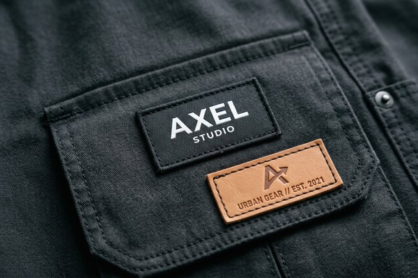
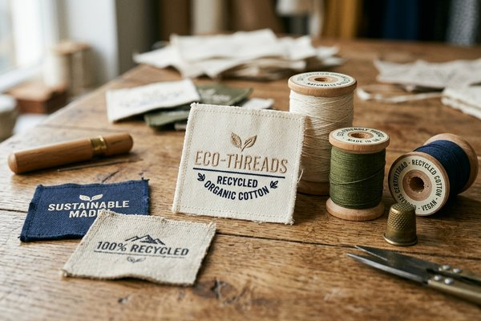

Fashion Brand Patches: 2026 Trends, Market Insights & Apparel Branding
Explore the rapid evolution of custom patches in global fashion and streetwear. From 3D puff embroidery and micro-woven hem tags to eco-friendly recycled materials, discover how apparel brands leverage custom patches to elevate perceived retail value and brand loyalty in 2026.

1. The Streetwear Patch Revolution: Why Patches Drive Apparel Value
In the global apparel industry, branding is no longer confined to simple screen prints or interior care labels. Over the past several seasons, custom apparel patches have emerged as one of the single most influential design components driving perceived retail value, brand authenticity, and visual identity for independent streetwear labels, luxury fashion houses, and activewear brands alike.
Unlike flat screen-printed graphics that can fade or crack over time, custom patches impart tactile depth, dimensional contrast, and a premium hand-feel. A $25 blank hoodie transformed with a high-density 3D puff embroidered chest patch and an embossed genuine leather hem label can easily command $95 to $150 at retail. Consumers increasingly associate physical patch construction with craftsmanship, heritage, and durability.

2. Top 5 Fashion Patch Trends Dominating 2026
As apparel design shifts toward a balance of retro nostalgic aesthetics and sustainable high-tech manufacturing, five distinct patch design trends are defining the 2026 fashion landscape:
Trend 1: Oversized 3D Puff Embroidery & Textured Chenille
Streetwear outerwear—specifically varsity jackets, heavy fleece hoodies, and oversized denim coats—continues to embrace high-elevation branding. 3D Puff Embroidery utilizes 3mm to 5mm polyurethane foam under dense satin stitching to create dramatic raised lettering. Meanwhile, vintage-inspired chenille patches bring soft, fuzzy varsity textures to chest emblems and back graphics.
Trend 2: Minimalist Micro-Woven Hem Tags & Sleeve Badges
While bold statement patches rule outerwear, contemporary luxury and minimalist streetwear favor understated micro-woven patches. Measuring between 1 inch and 1.5 inches, these ultra-fine damask woven labels are folded over sleeve cuffs, hoodie pocket edges, or lower bottom hems. They offer razor-sharp detail reproduction down to 0.1mm lines with zero scratchiness.
Trend 3: Eco-Friendly Recycled Cotton & Vegan Leather Labels
Environmental compliance and sustainable sourcing are top priorities for apparel brands worldwide. Forward-thinking labels are replacing standard polyester twills with 100% GOTS-certified organic cotton twill and GRS-certified recycled polyester thread. For denim and headwear, eco-friendly vegan apple leather and FSC-certified washable Kraft paper patches are replacing traditional animal hides.
Trend 4: Tactical Hook-and-Loop Utility Accents
The rise of "gorpcore" and technical outdoor apparel has integrated tactical elements into mainstream urban fashion. Jackets and cargo pants featuring modular Velcro hook-and-loop panels allow consumers to swap interchangeable morale patches, reflective callsign badges, and brand logos based on mood or occasion.
Trend 5: High-Contrast Monochromatic & Cyberpunk Neon Threads
Color palettes in 2026 lean heavily into two extremes: stark monochromatic black-on-black or matte-white-on-black embroidery for stealth luxury, and vibrant neon UV-reactive threads for futuristic cyberpunk aesthetics. High-contrast thread combinations ensure immediate visual recognition across social media feeds and photography.
3. Apparel Brand Patch Material & Manufacturing Matrix
Selecting the optimal patch style depends heavily on garment fabric weight, placement location, and target retail price point. The comparison table below highlights key manufacturing specifications for fashion brands:
| Patch Material Type | Ideal Apparel Applications | Visual Finish & Texture | Washing Fastness | Recommended Attachment |
|---|---|---|---|---|
| Custom Woven Patches | T-shirts, Hoodies, Beanies, Hem Labels | Flat, Smooth, Crisp Micro-Detail | Excellent (Industrial Wash) | Sew-on / Iron-on |
| 3D Puff Embroidered Patches | Varsity Jackets, Caps, Heavy Hoodies | Elevated 3D Relief, Tactile Thread | High (Machine Wash Warm) | Direct Sew-on |
| Genuine / Vegan Leather Patches | Denim Jeans, Jackets, Knit Beanies | Debossed / Embossed Rustic Matte | Medium (Air Dry Recommended) | Perimeter Stitching |
| Printed Sublimation Patches | Activewear, Windbreakers, Photo Graphics | Continuous CMYK Photo Print | Excellent (Fade-proof) | Heat Seal / Sew-on |
| Custom 2D/3D PVC Patches | Technical Outerwear, Backpacks, Rainwear | Rubberized Waterproof Relief | Maximum (100% Waterproof) | Sewing Groove / Velcro |
4. Strategic Patch Placement Guide for Modern Fashion
Correct placement is just as important as patch artwork design. Strategic positioning ensures maximum brand visibility while accommodating natural body movement and fabric draping:
- Left Chest & Center Chest: The traditional focal point for brand logos. Left chest patches typically measure 2.5 to 3.5 inches in diameter, whereas center chest patches on hoodies expand to 8 to 10 inches.
- Sleeve Biceps & Cuffs: Upper sleeve placement (3 inches below the shoulder seam) adds military-inspired authority. Smaller 1-inch woven badges wrapped around lower sleeve cuffs offer subtle luxury branding.
- Rear Waistband & Lower Hem: Essential for denim jeans and outerwear. Leather waist patches (3x2 inches) anchored at the right rear waistband are the global standard for premium denim.
- Hood Edge & Pocket Flaps: Embroidered or woven patches applied directly onto hoodie hoods or kangaroo pocket seams capture visual attention from all angles.
5. Sustainable Branding: Eco-Friendly Threads & Recycled Twill
With major retail markets in Europe and North America enforcing stricter environmental transparency standards, fashion manufacturers must ensure every trim and accessory meets sustainability criteria.

At ChinaPatchFactory, we support eco-conscious clothing lines by offering OEKO-TEX Standard 100 certified threads and GRS (Global Recycled Standard) certified polyester fabric backings. Our sustainable patch solutions eliminate harmful AZO dyes, heavy metals, and phthalates, allowing your brand to pass international compliance audits effortlessly.
Pro Tip: Hybrid Eco Branding
Pair an unbleached organic cotton twill base with recycled polyester embroidery thread to create an authentic, eco-friendly aesthetic that resonates with environmentally conscious consumers.
6. The Fashion Designer’s Pre-Production Patch Checklist
Before submitting artwork files for custom patch manufacturing, review this 6-point checklist to guarantee flawless production results:
- ✔️ Vector Artwork Preparation: Provide high-resolution vector files (.AI, .EPS, or .PDF) with converted fonts and Pantone PMS codes.
- ✔️ Select Backing Attachment: Choose heat-seal iron-on backing for quick application, or plain backing with perimeter sewing grooves for heavy garment stitching.
- ✔️ Verify Min Line Thickness: Ensure text line thickness is at least 0.9mm for embroidery or 0.3mm for woven labels.
- ✔️ Match Garment Wash Requirements: Select leather or PVC materials according to expected wash care instructions (e.g., dry clean vs. industrial laundry).
- ✔️ Request 12H Digital Proof: Carefully inspect digital embroidery stitch simulations provided by our digitizers before approving mass production.
- ✔️ Order Physical Pre-Production Sample: For large apparel production runs (500+ pcs), request a physical sample patch to verify thread sheen and color accuracy in person.
Frequently Asked Questions (FAQ)
Q1: How do custom patches increase perceived retail value for apparel brands?
Custom patches add dimensional texture, physical weight, and tactile quality that flat screen printing cannot replicate. Consumers perceive patched garments as higher quality, allowing clothing lines to command higher retail markup and profit margins.
Q2: Which patch style is best for high-end denim and outerwear?
For denim jeans and jackets, debossed genuine leather or vegan suede patches attached to the rear waistband are industry standards. For heavy outerwear, 3D puff embroidered patches or custom molded PVC rubber patches offer maximum durability and weather resistance.
Q3: Are eco-friendly recycled patches durable through industrial washing?
Yes! Our GRS-certified recycled polyester thread and organic cotton twill backings undergo rigorous wash testing to ensure color fastness, structural integrity, and zero shrinkage through repeated machine washing.
Q4: What is the ideal minimum order quantity for clothing brand start-ups?
At ChinaPatchFactory, we have no minimum order quantity (MOQ). Start-up fashion brands can order small sampling batches of 1 to 10 patches before scaling up to wholesale bulk orders of 1,000+ pieces.
Q5: Can I request physical pre-production sample patches before mass manufacturing?
Absolutely! Every order includes a complimentary 12-hour high-resolution digital proof. Additionally, we can produce and ship physical pre-production sample patches for final hands-on approval before commencing mass factory production.
Conclusion & Wholesale Manufacturing Order Advice
As custom patches continue to dominate fashion runways, streetwear drops, and eco-conscious apparel collections, partnering with an experienced direct factory manufacturer is essential for quality control, competitive pricing, and fast turnaround times.
At ChinaPatchFactory, we work directly with apparel brand designers, clothing manufacturers, and promotional distributors worldwide. From micro-woven hem labels to 3D puff varsity emblems, our master digitizers and advanced embroidery machinery bring your fashion vision to life.
Ready to Elevate Your Apparel Brand with Custom Factory Patches?
Send us your logo artwork or design concepts today. Receive a free digital proof and competitive factory quote within 12 hours with no minimum order requirements!
Get Free Quote